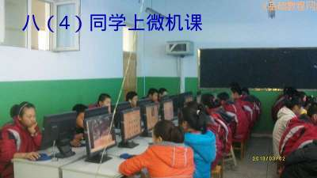

2012-2013 第二学期八年级图像处理教学设计
作者：TeliuTe 来源：基础教程网
五、学会缩小图片 返回目录 下一课
（一）教学设计
1、学习目标：学会缩小图片
2、注意事项：绕过弯来，既不要跳也不要落，一楼过了二楼
3、教学过程：
1）教师准备学案和板书；
2）学生整队进入，开机抄黑板上笔记；
3）教师讲解板书演示操作；
4）学生打指法、日志、完成操作；
5）教师打勾记录学生指法成绩，检查日志和操作；
注：学生抄完笔记就开始打指法、日志，老师讲完后再继续完成；
（二）板书设计(学生笔记)
第5课 学会缩小图片
1、素材：相册，查看原图，复制图像
2、打开图像：文件，创建。从剪帖板
3、缩放图像：右键，图像，缩放
4、缩小一半，配上文字说明
5、保存，另存，上传
--
笔记
1、保存两个要点：位置和文件名
2、用“另存为”改变，重新保存
操作图示：

（三）课后记 2013-3-16 15:41
====
上午两个班，还在想着上学期的一节
课间大扫除学生也没来早，迟到 了许多
--
内容有些不好讲，把缩放先讲了
工具得找些合适的范例，图像处理的可以先讲
--
导入图片有些麻烦，学生机上没有素材
让到校园网里找，复制图像然后从剪贴板来创建
--
选择素材需要注意稍大些的，找了个学生上传的自己相片
结果还在下面激动的吵嚷，训了一顿自己不会还说别人拍的不好
--
难度不大按步骤操作都还可以，加上文字图文并茂
有些选太小的图片，不能再缩了让放大
--
笔记还顾不上有些，效率不是很高
小错误太多费了许多时间，文字有写到图像外面，出不来
--
有个班是周六最后一节，不开会就可以上
学生上节体育，个个满头大汗的
--
还得仔细一些，将来有可能就乱成一团
能抓就抓一下，要不初三又会收拾不住
--
毛病是惯出来的，这样有时上有时不上的
还得再学会在这样条件下教学
--
内容分成三个步骤，先导入图像，再处理，最后保存
这个班的保存也还有问题，学着忘着也是麻烦
返回目录 下一课
本教程由86团学校TeliuTe制作|著作权所有
基础教程网：http://teliute.org/
美丽的校园……
转载和引用本站内容，请保留作者和本站链接。